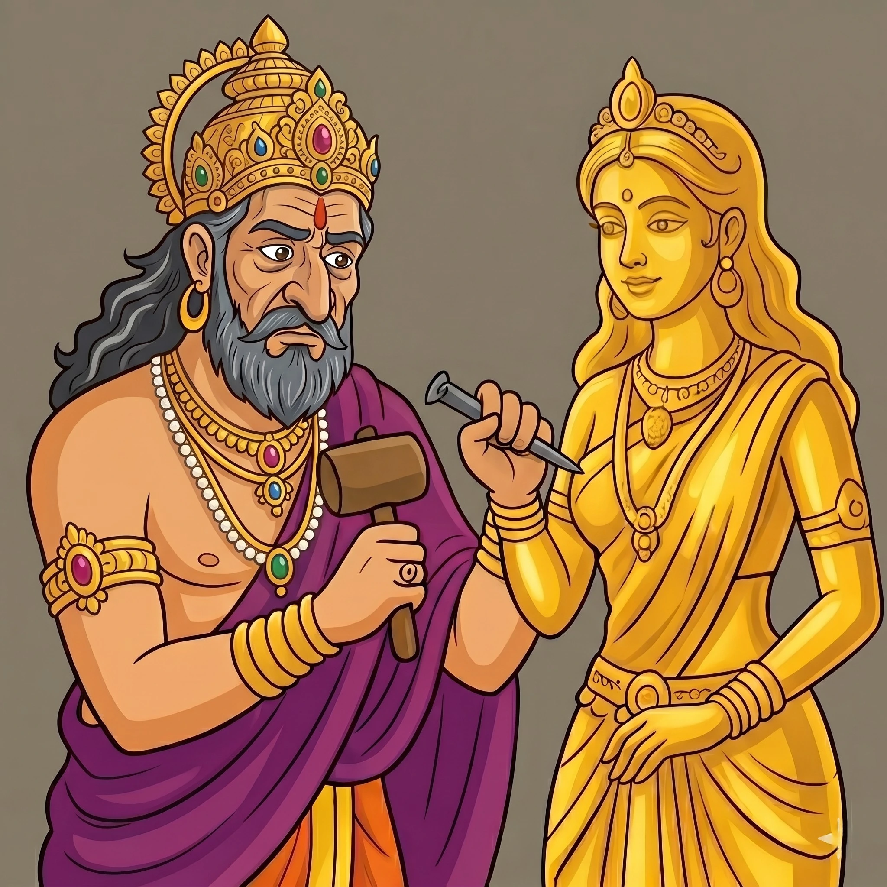

පළමු පරිච්ඡේදය
රන් රුවක් නිර්මාණය කිරීම
අසමසම නුවණක් සහ යෝධ බලයක් ඇති කුස රජු ඉතා ගුණවත් පාලකයෙකු වුවද, ඔහු උපතින්ම විරූපී මුහුණකින් යුක්ත විය. විවාහ වන ලෙස මෑණියන් කළ බලවත් ඉල්ලීම මඟහැරීම සඳහා, රජු තම දෑතින්ම මිටියක් සහ කටුවක් භාවිත කර අතිශය රූමත් රන් මූර්තියක් නිර්මාණය කළේය. ඉන්පසු ඔහු ප්රකාශ කළේ ඊට සමාන රූ සපුවක් ඇති කුමරියක සොයාදුන්නොත් පමණක් විවාහ වන බවයි.